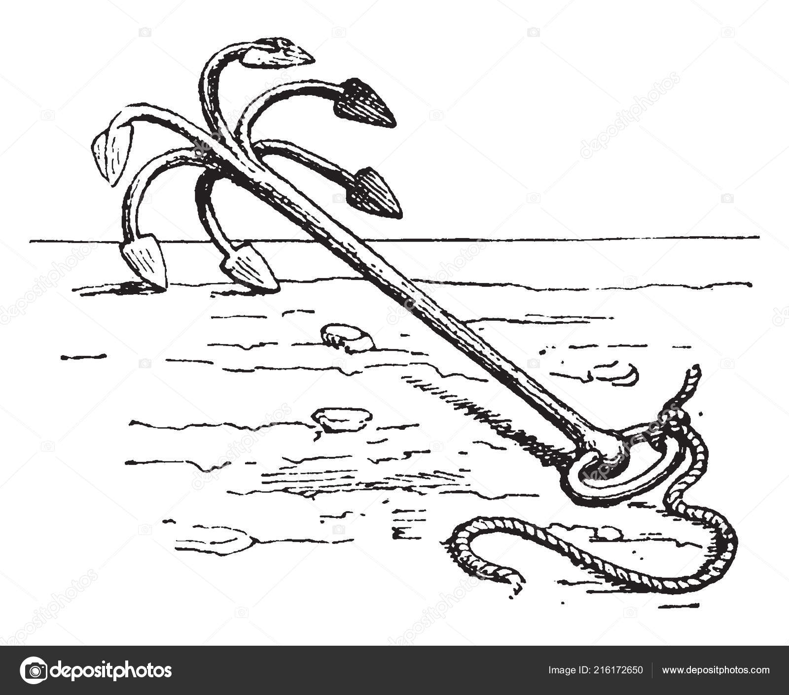

나폴레옹 시대 영국 전함의 전투 광경 - Lieutenant Hornblower 중에서 (13)
게시: 2019-05-06T06:30:24+09:00
버클랜드는 결정 장애로 괴로와하면서 (in painful indecision) 그의 두 하급 장교를 쳐다보며 앉아 있었다. 부시는 그런 그에게 동정심이 느껴졌다. 만약 이 두번째 공격이 처참하게 실패한다면, 특히 전체 상륙조가 고립되어 항복이라도 해야 한다면 버클랜드의 미래는 확실하게 끝장나게 될 것이었다. "우리가 요새를 점령한다면, 함장님," 혼블로워가 말을 이었다. "만 안에 있는 사략선들을 쉽게 처리할 수 있습니다. 다시는 그 만을 정박지로 사용하지 못하게 될 겁니다." "그건 사실이지." 버클랜드도 동의했다. 그것이 그가 받은 명령을 아주 깔끔하고도 경제적으로 완수할 수 있는 방법이었다. 그게 성공한다면 그의 평판은 완전히 회복될 수 있었다. 리나운 호가 파도를 타면서 전함의 목판들이 박자에 맞춰 삐걱거렸다. 무역풍이 선실 안으로 불어들어왔고, 선실 안의 갑갑함을 어느 정도 덜어주었다. 부시의 땀투성이 얼굴에도 시원한 바람이 불어왔다. "빌어먹을." 버클랜드가 갑자기 신중함을 떨쳐버리고는 결정을 내렸다. "하자구." "알겠습니다, 함장님." 혼블로워가 말했다. 부시는 그 결정에 기쁨을 드러내는 말을 뭔가 하려다가 간신히 참았다. 혼블로워도 중립적인 목소리를 내야 했다. 버클랜드를 너무 노골적으로 행동 쪽으로 몰아붙이면 역효과를 내어 지금이라도 버클랜드가 결정을 번복하는 결과를 낼 수도 있었다. 비록 이 결정이 내려지긴 했어도, 못지 않게 중요한 결정을 하나 더 내릴 것이 남아 있었다. "누가 상륙조를 지휘할 거지 ?" 버클랜드가 물었다. 그건 사실 수사적인 질문이었다. 버클랜드 말고 그 질문에 답을 할 수 있는 사람은 아무도 없었다. 그 사실은 부사와 혼블로워에게 명백했다. 그들은 그저 기다릴 수 밖에 없었다. "만약 불쌍한 로버츠가 살아 있었다면 그의 의무였을텐데 말이야." 버클랜드는 그렇게 말하고는 부시 쪽을 돌아보았다. "미스터 부시, 자네가 지휘를 맡게." "예, 함장님." 부시는 의자에서 일어나 낮은 갑판 들보에 부딪히지 않도록 고개를 불편하게 숙인 채 섰다. "자네와 함께 상륙할 사람으로 누구를 데리고 가고 싶은가 ?" 혼블로워는 이 회의 내내 일어나 있었는데, 이제 그는 몸의 중심을 이쪽 발에서 저쪽 발로 왔다갔다 옮겨가며 초조해 하고 있었다. "제가 더 필요하신지요, 함장님 ?" 혼블로워는 버클랜드에게 말했다. 부시는 그를 쳐다보는 것만으로는 혼블로워 내면의 감정이 어떤 것인지 알아챌 수가 없었다. 그는 그저 공손하고 성실한 장교로서의 자세를 취하고 있었다. 부시는 전함에 남아 있는 부관인 스미스에 대해서 생각해 보았다. 그는 당연히 상륙조에 포함될 해병 대위인 화이팅에 대해서 생각해 보았다. 또 하급 장교로 활용될 수 있는 사관생도들과 보조 항법사들이 있었다. 그는 이제 위험하고 절박한 전투 작전의 책임을 맡아야 했다. 작전에 들어가면 그 성공은 버클랜드의 근무 고과에도 영향을 주겠지만 그 자신의 근무 고과에도 영향을 주는 중대한 일이 될 것이었다. 이런 일, 그러니까 그의 커리어에서 가장 중요한 순간이 될 이 떄에 그는 누구를 자신의 옆에 두고 싶었을까 ? 만약 그가 다른 부관을 한 명 더 요청한다면 그는 상륙조의 지휘 서열 2위를 맡게 될 것이며, 현장에서 뭔가 결정을 내릴 때 목소리를 내게 될 것이었다. "이 자리에 미스터 혼블로워가 더 필요한가, 미스터 부시 ?" 버클랜드가 물었다. 혼블로워는 적극적인 차석 지휘관이 될 재목이었다. 다른 말로 하자면 가만히 있질 못하는 차석 지휘관이라고 표현할 수도 있었다. 그는 툭하면 - 최소한 머리 속으로는 - 비판적으로 나올 것이었다. 그는 그의 명령 하나하나를 혼블로워가 다 듣고 있는 자리에서 지휘관 노릇을 하고 싶지는 않았다. 부시의 머릿속에서 일어나는 이런 논쟁은 장점과 단점을 또박또박 짚어가며 명확히 틀을 짜서 일어나는 것은 아니었다. 그건 그저 그의 다년간의 경혐에서 비롯된 편견과 본능의 충돌이었고, 그런 것을 부시는 말로 명확히 표현해본 적이 없었다. 그는 혼블로워도 스미스도 필요없다고 막 결정을 내리려는 순간에 혼블로워의 얼굴을 쳐다보게 되었다. 혼블로워는 그냥 무표정인 얼굴을 유지하려 애쓰고 있었으나, 부시의 동정어린 눈에는 혼블로워가 이 상륙조에 끼고 싶어 얼마나 안달이 났는지가 훤히 보였다. 물론 어떤 장교라도, 자신을 빛나게 할 기회가 되는 이런 작전에 당연히 끼고 싶어할 것이었다. 그러나 혼블로워를 요동치게 만드는 것은 그것보다는 좀 더 긴박한 동기인 것처럼 보였다. 그의 손은 양 옆에 '차렷' 자세로 있었으나, 부시가 보니 그의 긴 손가락은 넓적다리를 초조하게 톡톡 두드리다가 자제하다가 다시 못 견디고 두드리기를 반복하고 있었다. 부시가 결정을 내리도록 한 것은 냉정한 판단과는 거리가 먼 것이었다. 굳이 말하자면 친절 때문이었다. 어쩌면 애정이라고 부를 수도 있는 것이었다. 그는 어느덧 이 불안하고 다재다능한 젊은이를 좋아하게 되었고, 그의 육체적 용기에 대해서는 의심할 바가 없다고 생각했다. "저는 미스터 혼블로워를 함께 데려갔으면 합니다, 함장님." 그는 말했다. 이 말이 입에서 튀어나온 것은 그의 자유의지와는 거의 상관이 없는 것처럼 보였다. 따뜻한 마음을 가진 형이라면 뭔가 신나는 일을 할 때 부담이 좀 되더라도, 그저 친절한 마음에서 훨씬 어린 동생을 데리고 가는 것과 비슷한 일이었다. 그가 이 말을 하자 그에 호응하여 혼블로워가 부시에게 눈길을 던졌는데, 그 눈빛을 보니 개인적 감정을 섞어서 결정을 했다는 후회가 싹 사라져버렸다. 혼블로워의 눈빛에는 안심과 함께 고마움이 뚝뚝 떨어지고 있어서, 부시는 마치 자기가 굉장히 친절한 아량을 베풀었다는 느낌이 들었다. 그는 그렇게 결정함으로써 자기가 더 위대한 사람이 된 것 같았다. 자연스럽게, 혼블로워를 사지로 끌고 들어가는 것에 대해 혼블로워가 고마워하고 있다는 것이 뭔가 어울리지 않는다는 생각은 부시에게 조금도 들지 않았다. "알겠네, 미스터 부시." 버클랜드가 말했다. 그에게 흔한 일이었지만, 결정을 하고나서 그는 또 약한 모습을 보였다. "그러고나면 내게는 부관이 한명 밖에 안 남는군." "카베리가 당직을 맡을 겁니다, 함장님." 부시가 대답했다. "그리고 당직 사관 역할을 잘 해낼 보조 항법사가 몇 명 있습니다." 부시는 이미 결정을 내렸으니 마치 물고기가 미끼를 물 듯 반대에 대해 반박으로 맞서는 것이 당연한 일이었다. "알겠네." 버클랜드는 거의 한숨을 내쉬다시피하며 다시 말했다. "그리고 자네는 뭐 때문에 안절부절한 건가, 미스터 혼블로워 ?" "아무것도 아닙니다, 함장님." "뭔가 말하고 싶은게 있는 것 같은데. 까놓고 말해보게. (Out with it)" "중요한 건 아닙니다, 함장님. 기다려도 되는 일입니다. 다만 항로 변경에 대해 생각하고 있었습니다, 함장님. 지금 스캇치맨 만으로 항로를 변경하면 시간 낭비를 없앨 수 있습니다." "그렇겠군." 해군 내의 모든 장교들처럼 버클랜드도 바람과 날씨는 언제든 변덕을 부릴 수 있으며, 따라서 바다에서 뭔가 결정을 내리면 절대 머뭇거려서는 안 된다는 것을 잘 알고 있었다. 그럼에도 그는 옆구리를 찔러주지 않으면 자꾸 그걸 잊는 것 같았다. "그래, 알겠네. 그러면 당장 전함을 순풍 방향으로 항로를 변경하는 것이 좋겠군. 지금 항로는 어느 방향이지 ?" 전함의 항로를 변경하는 난리법석이 잦아든 뒤 버클랜드는 일행을 데리고 그의 선실로 돌아가 지친 듯이 의자에 주저앉았다. 그는 새삼스럽게 다시 시작된 걱정으로 초조하다는 것을 감추려고 일부러 변덕스러운 태도를 취했다. "당분간은 미스터 혼블로워가 만족스러워하겠군." 그는 말했다. "이제 자네가 필요한 것에 대해 이야기해보게, 미스터 부시." 상륙작전에 대한 토의는 편성할 수병들과 그들에게 지급할 장비들, 다음날 아침 어디서 어떻게 랑데뷰할 것인지 등에 대해 평범하게 진행되었다. 이런 사항들이 정리되는 동안 혼블로워는 나서지 않고 학구적인 태도로 뒤쪽에 잠자코 있었다. "뭐 제안할 거라도 있나, 미스터 혼블로워 ?" 부시가 결국 물었다. 필요해서라기보다는 예의상으로라도 그렇게 질문을 해야 했다. "딱 하나 있습니다. 줄을 연결한 보트 갈퀴(boat grapnel)들을 좀 가지고 가는 것이 좋겠습니다. 요새 벽을 기어올라야 한다면 그것들이 유용할 것입니다."

(해전을 벌일 때 상대편 군함이나 보트에 던져 넣어 잡아당길 때 사용되는 보트 갈퀴입니다.)
"그렇겠군." 부시도 동의했다. "그것들이 지급되도록 신경써주게." "예, 부관님." "전령이 필요한가, 미스터 혼블로워 ?" 버클랜드가 물었다. "있는 편이 좋을 것 같습니다, 함장님." "누구 특히 마음에 두고 있는 사람이 있나 ?" "괜찮으시다면 웰라드가 좋겠습니다, 함장님. 침착하고 생각이 빠른 친구입니다." "알겠네." 버클랜드는 웰라드의 이름이 언급되는 것을 듣고는 혼블로워를 째려보았으나 (웰라드는 소여 함장이 햇치 통로에서 떨어지는 바람에 함장 수행 능력을 상실하게 된 사건과 관련이 되었던 사관생도입니다 : 역주) 당장은 그 문제에 대해 더 이야기 하지 않고 넘어갔다. "다른 건 없나 ? 없다고 ? 미스터 부시는 ? 모두 된건가 ?" "예, 함장님." 부시가 말했다.
버클랜드는 손가락으로 테이블을 두두두 두들겼다. 방금 항로를 변경한 것은 결정적인 것이 아니었다. 그로 인해 그의 결정이 확고히 굳어지게 된 것은 아니었다. 하지만 다음 명령을 내린다면 그렇게 되는 것이었다. 수병들을 잠에서 깨워서 무기를 지급하고 상륙에 대한 지시사항을 전달한다면 더 이상 그 결정을 철회하는 것은 지극히 어려운 일이 될 것이었다. 다시 시도했다가 혹시 실패라도 한다면 그건 정말 대참사가 되는 셈이었다. 성공을 이끌어내는 것은 그의 권한 밖의 일일지 몰라도, 실패를 회피하는 것은 분명히 그의 권한 내의 일이었다. 위험을 무릅쓰지 않으면 되니까 말이다. 그는 고개를 들어 그를 몰인정하게 쳐다보고 있는 두 부하 장교의 시선과 눈을 마주쳤다. 아니야, 이미 철회하기엔 늦었어. 나중에라도 철회할 수 있다고 생각한 것이 그의 실수였다. 그는 철회할 수가 없었다. "그러면 명령을 전달하는 일만 남았군." 그는 말했다. "그렇게 전달되도록 해주겠나 ?" "예, 함장님." 부시가 말했다.
부시와 혼블로워가 막 선실을 나서려는 찰라에 버클랜드가 오랫동안 묻고 싶었던 질문을 마침내 했다. 이 질문은 혼블로워가 웰라드를 언급하면서 궁금증이 다시 피어난 것이긴 했지만, 이 질문을 하려면 갑자기 대화 주제를 바꿔야 했다. 하지만 뭔가 결정을 내렸다는 성취감으로 뿌듯해하고 있던 버클랜드는 용기를 내어 이 질문을 마침내 꺼냈다. 어쨌거나 이건 기분이 고조되는 순간이었으므로 자신감이 넘치고 있었다. "그나저나, 미스터 혼블로워." 그는 말하자 혼블로워는 문 가에 멈춰섰다. "대체 함장님은 어쩌다 햇치 통로에서 떨어지게 된 것이지 ?" 부시는 혼블로워의 얼굴에서 그 열정 넘치는 표정이 싸악 사라지고 무표정의 가면으로 대체되는 것을 보았다. 대답이 나오기까지는 1~2초 정도가 걸렸다. "아마 균형을 잃으셨던 것 같습니다, 함장님." 혼블로워는 매우 정중하지만 전혀 감정이 없는 목소리로 대답했다. "전함이 그날밤 요동이 심했던 것 기억하실 겁니다, 함장님." (누군가 함장을 햇치 통로 아래로 떠밀어버린 것 같긴 한데, 사람들은 웰라드 혹은 혼블로워 둘 중 하나가 그랬다고 의심들 하고 있습니다. : 역주) "그랬던 것 같네." 버클랜드가 대답했는데, 그 목소리에는 실망감과 당혹감이 그대로 드러났다. 그는 혼블로워를 빤히 쳐다보았지만, 그 얼굴에서 얻어낼 정보는 전혀 없었다. "아, 알겠네. 하던 일 계속 하게." "예, 함장님."